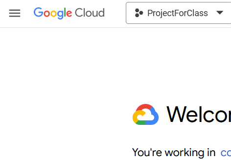

In this assignment, you will use Terraform and Google Cloud Platform to create a Virtual Machine. Follow the videos for how to do this.
Note: all of the following links are external links and open in a new tab.
1. Sign up for an account with Google Cloud Platform, and log into the console. If you have a gmail address, you already have an account.
2. Create a new project for this course. In the dashboard, click on current project name (for me, that's ProjectForClass), and within that view, you'll see an option to create a new project.

3. Install terraform (on your computer).
4. Install gcloud CLI (on your computer).
5. Clone the course github repo
6. Deploy the provided code.
In the tf-mod1-demo directory is an example terraform. In provider.tf, you'll need to modify 2 places (both marked FILL-IN).
7. ssh into the deployed VM. use both the gloud method, and with the ssh link from the GCP console.
Were you able to deploy the VM and ssh into it.